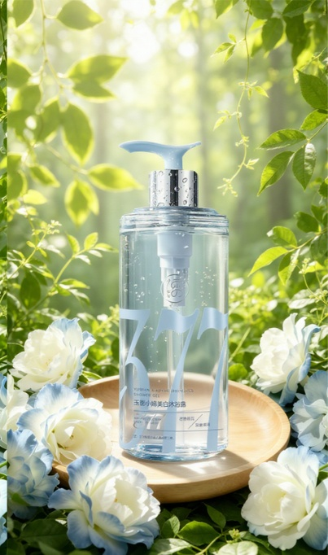
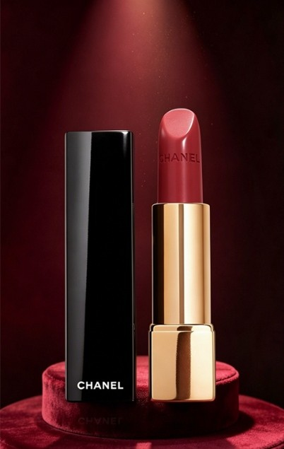
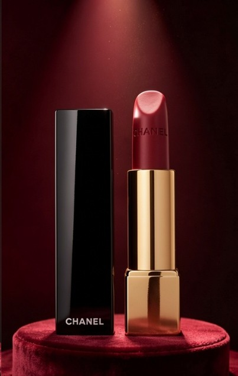
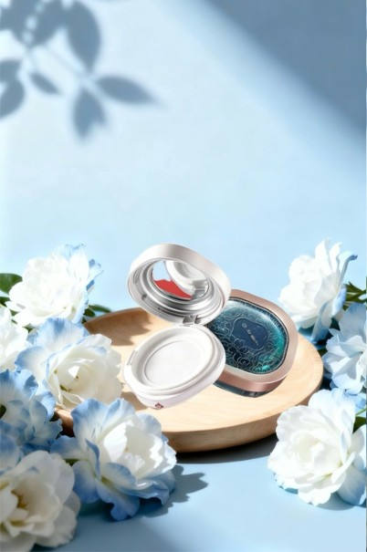
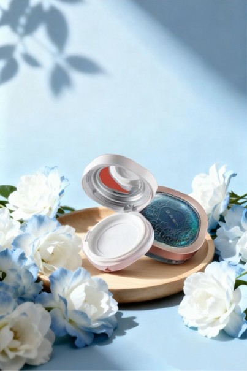

GROUP 01
第一组视觉融合

VISUAL EXPLORATION 08 · 2026 · VISUAL FUSION
AI视觉融合设计
AI-ASSISTED VISUAL FUSION DESIGN
通过 AI 将不同视觉元素融合为统一画面，在保持各元素特征的同时生成全新的融合视觉，共三组六张作品。
FUSION WORKS
GROUP 01

GROUP 02


GROUP 03

